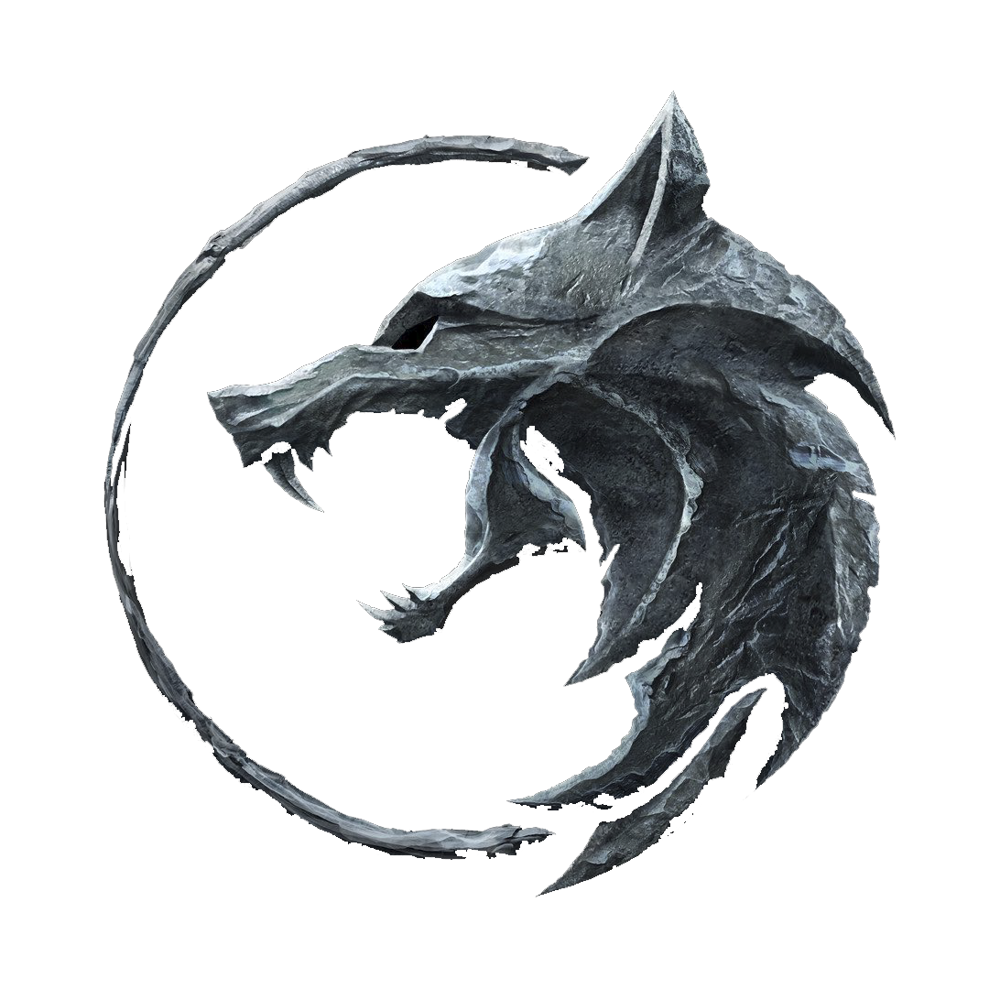
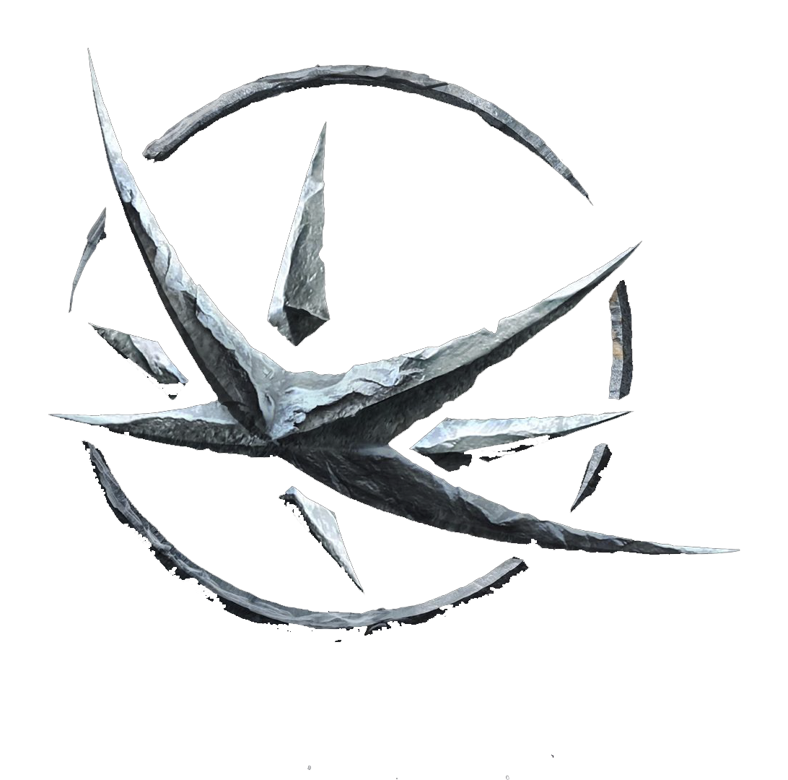
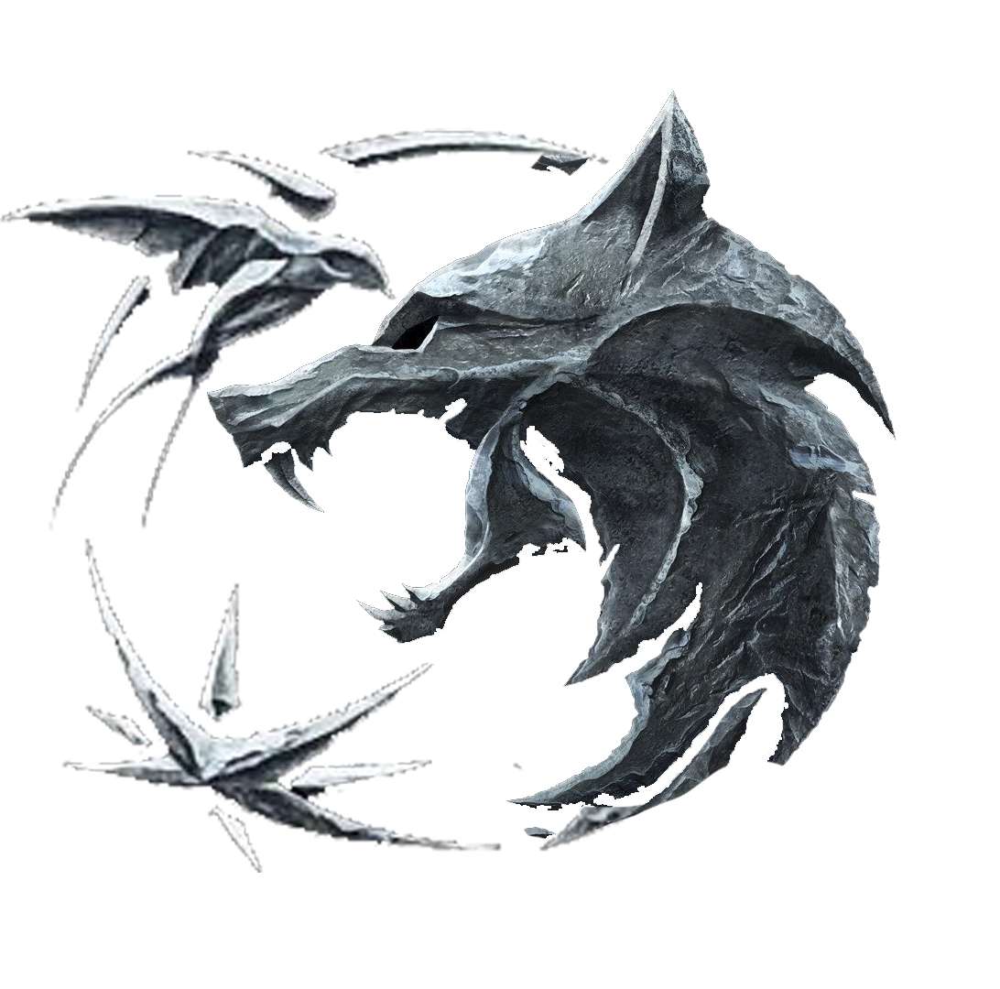

...if I'm to choose between one evil and another, then I prefer not to choose at all.
Geralt Of Rivia
Geralt of Rivia was a witcher, who was tied to Ciri through the Law of Surprise. While initially reluctant to accept his destiny, Geralt eventually came to terms with his fate. Despite their tumultuous relationship, he also loved the sorceress Yennefer of Vengerberg.
Symbols
The Wolf

symbols is Geralt's wolf. Geralt lives a solitary life as a Witcher, a monster hunter who has trained extensively both physically and in the art of magic. Given Geralt's appearance, with his snow-white hair, and his lifestyle, it makes sense that his symbol is Gwynbleidd, the Elder Speech word for "white wolf."
The Swallow
character symbols is a swallow, meaning Ciri. Ciri is a princess of Cintra and Geralt's ward, taken under his wing when he cited the Law of Surprise (wherein a saved man is required to offer up his first born to the person who saved him) after saving Ciri's father, Duny.
The Star

symbols is Yennefer's star. Yennefer is a powerful sorceress who lives in Vengerberg. She is a love interest to Geralt and a mother figure to Ciri. Yennefer's symbol is known as the Obsidian Star.
Unity

Geralt's fate is entwined with Ciri and Yennefer's, putting all three on a course to ensure they will come together and help strike down enemies in their home called the Continent.